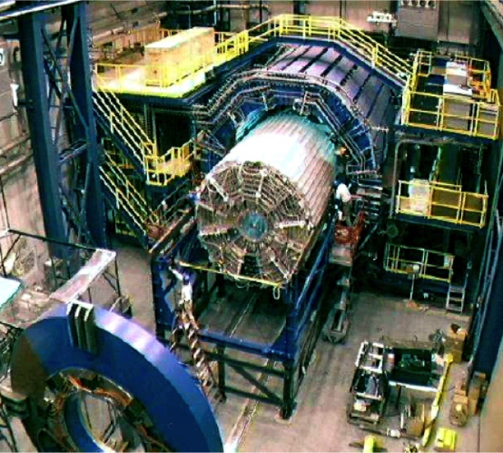
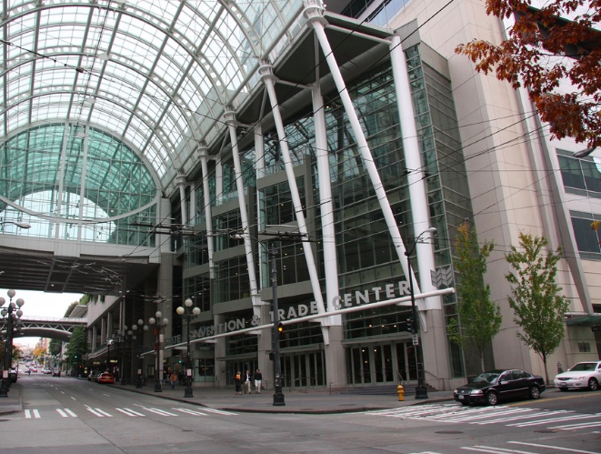
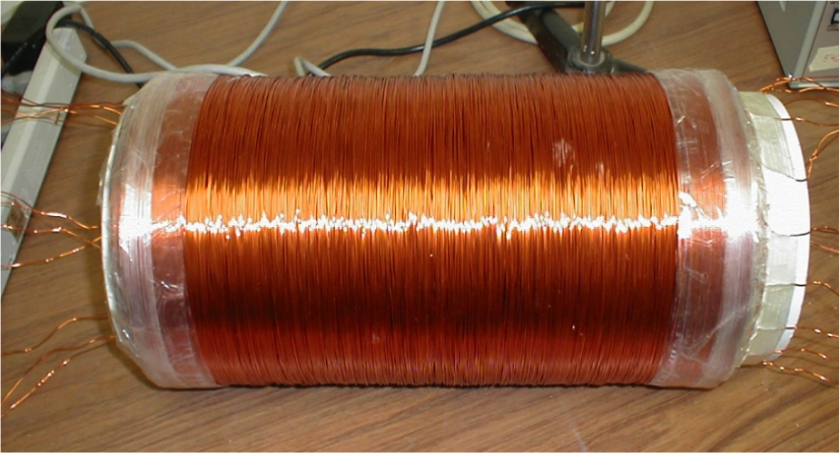
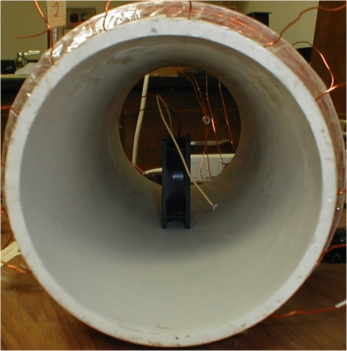

| Physics Research Project |
Jan 2006 - May 2007 |
After a series of electronics failures at Brookhaven National
Laboratory (BNL) of equipment near the particle detectors, I
examined the effects of fringe magnetic fields (50-200 Guass) on cooling fan
behavior. I found that the fan's response is highly dependent
on the orientation with respect to the field – an observation
that matched the failure pattern. My results were presented
at BNL and CERN and I gave poster and oral presentations at
the American Association of Physics Teachers / American
Astronomical Society joint meeting in January 2007.
|

detector at Brookhaven National Lab (source: BNL)
|

AAS / AAPT joint meeting in Seattle
|
|

custom test solenoid
|

test setup
|
 |
Fr. Thomas McShane (faculty) |
|
Metropolitan Science and Engineering Fair: 1st place Physics, Computer Science, & Engineering project; 3rd place Grand Prize; 2nd place Armed Forces Award; University of Nebraska at Lincoln Best Engineering/Physics Project
Nebraska Junior Academy of Sciences: Herbert Hoover Young Engineer Award; Finalist |